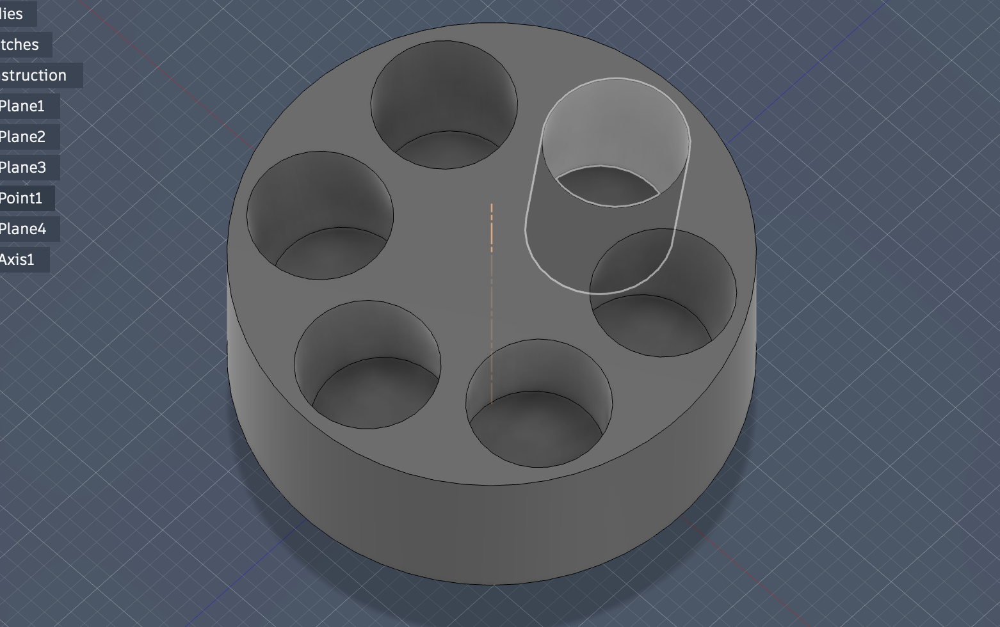
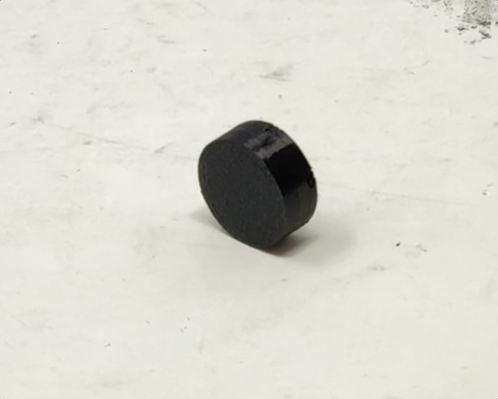
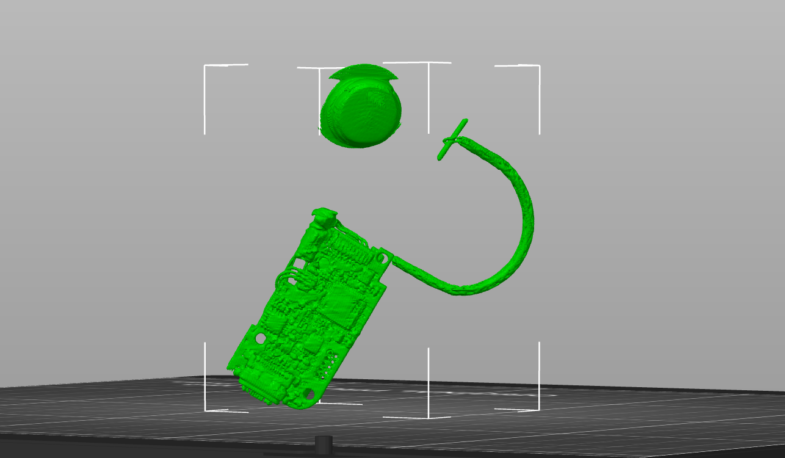

Week 5: 3D Design, Printing, Scanning/h1>
Background
This was my first time using CAD to 3D print something! I actually feel like I understand how 3D printing works now and how to scan something (as well as why that's important). The theme of my work this week was for my job at Brain-Computer Interface Company, Nia Therapeutics.
Designing and Printing an Object



The above object is meant to hold magnets and be attatched to a skull. It is very small and has very small holes for the magnets. The hardest part of this was figuring out how to get the holes to point radially inward. The holes do not point straight down but instead extend inward, which I learned how to create a tangent plane and loft downwards. Finally, I exported and printed it. This could not easily be made using a subtractive process because the preciseness of the holes, hole depth, and housing depth.
Download 3D, Stl, and Sliced Gcode Zipped FilesScanning


I was able to use a CT scanner to convert an External Processer (attatched to the skull), which otherwise would've been the enemy of the class scanner as it is black and shiny. It went layer by layer and scanned the plastic and hardware.
Download Stl File